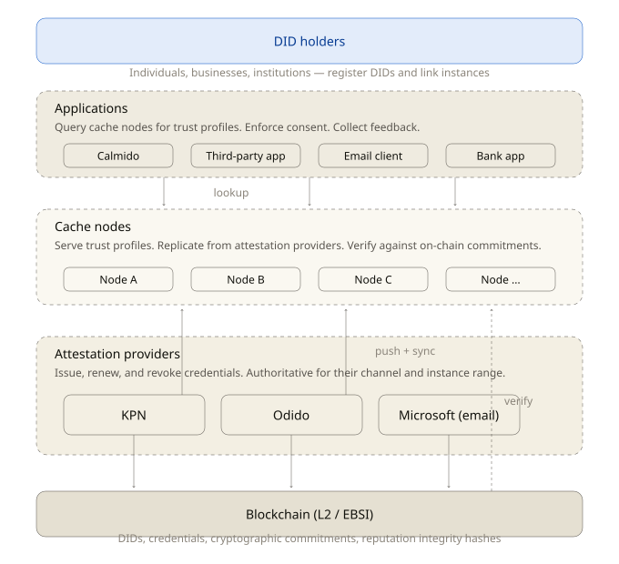

An open European protocol that lets anyone verify a call, message, or email comes from a registered source — without revealing who is behind it.
Every registered source can be verified. None are forced to reveal who they are. The asymmetry is the protocol.

TARIDE is governed as a multi-stakeholder foundation rather than incorporated as a commercial entity. Trust infrastructure cannot be subject to acquisition, equity dilution, or unilateral pivot.
The foundation board is composed of telecom representatives, security researchers, privacy advocates, and a European public-interest seat. No commercial entity holds a majority. The protocol is released under CC BY 4.0; the reference implementation under Apache 2.0.
Precedents we acknowledge — and do not imitate — include Mozilla, Signal Foundation, Let's Encrypt, and Ecosia.
| Phase | Deliverable | Detail | Status |
|---|---|---|---|
| Q2·26 | Foundation registered | Dutch stichting; statutes filed with Kamer van Koophandel; board seated. | ✓ done |
| Q2·26 | Foundation document v0.51 | Vision, principles, governance. Open for critical feedback through Q3. | ✓ done |
| Q3·26 | Technical spec v0.6 | Resolver protocol, credential format, attestation chain. | in progress |
| Q4·26 | Reference resolver | Apache 2.0 implementation, Go + Rust bindings, eIDAS test harness. | next |
| Q1·27 | First operator pilot | One Dutch telecom, one Dutch ISP, one European messaging provider. | later |
| Q2·27 | v1.0 spec freeze | After two pilots, the spec freezes for two years before any breaking change. | later |